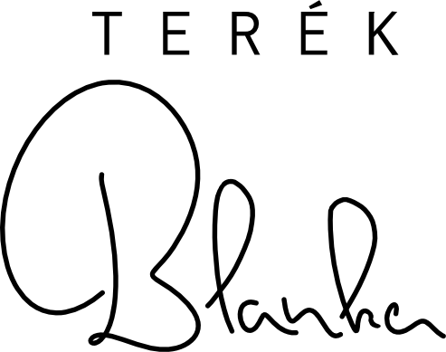
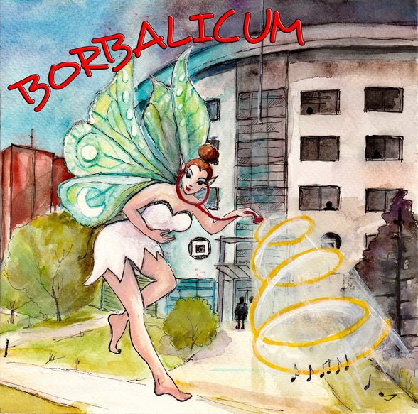

énekes
esküvők / rendezvények


Ajánló
Repertoár
- Klasszikus repertoár
- Schumann, Schubert, Mozart, Grieg, Liszt dalok
- Ave Maria szerzemények (Schubert, Gounod, Wolf, Verdi, Caccini, Marchesi, Franck, Mascagni)
- Francia és olasz romantikus áriák: Bizet, Verdi, Mascagni, Bellini, Puccini áriák
- Operett
- Csárdáskirálynő, Lili bárónő, Marica grófnő, Bál a Savoyban, Leányvásár – duett és szóló részletek
- Musical
- Operaház fantomja, My fair Lady, Nyomorultak, Elisabeth, Macskák ismertebb dalai
- 20’-as, 30’-as évek slágerei
- Meseautó, Este fess a pesti nő, Holdvilágos éjszakán, Köszönöm, hogy imádott, Fogj egy sétapálcát, Kár itt minden dumáért, Engem nem lehet elfelejteni, Tíz után, Most kéne élni még, Elég volt nékem magából...
- New york, New York, La vie en rose, Sous le ciel de Paris, ...